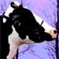
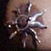

My dinner with George
A chance encounter involving protests, Gestapo tactics, mayhem and fine dining in a small Southern Oregon town.
by Micaela

A Mean and Unholy Ditch: The sleep of reason amid wild dogs and gin
Bad government lies with the majority of American people themselves, something that few liberals would even admit to.
by Joe Bageant Spong
 Understanding the Christian roots of my political depression
Understanding the Christian roots of my political depression
The Republican mix of piety, patriotism and fear works, but is lethal for America and Christianity.
by John Shelby Spong
 I am your dog
I am your dog
A word to humans, on behalf of canines everywhere
by Fi Doe
 Church and State
Church and State
A lunatic Christian cult has the run of the White House and the ear of the president. What do they want? The end of the world. Be afraid.
by Neal Pollack
Republicanism shown to be genetic
Science finally proves that being GOP is not a chosen lifestyle.
by Log Cabin
Nuclear Power is the Only Green Solution
We have no time to experiment with visionary energy sources; civilisation is in imminent danger.
by James Lovelock
Terrorism, tweezers and terminal madness
Some thoughts about the absurdity of too much security..
by Patrick Smith
Back to Nature with Bruce Campbell
An interview with the actor, filmmaker, environmentalist and Evil Dead guy.
by Robert Casserly
 Freethinkers
Freethinkers
A history of American secularism
by Susan Jacoby
The Homosexual Agenda
The actual, official gay document, direct from queer headquarters, published for the first time, anywhere.
skreed.com

Curse Words For Janet Jackson
Daddy, why does that f--- politician hate women's breasts? Because he's a s-- and a hypocrite, honey.
by Mark Morford
Dear Mr. Will
An Open Letter to Political Columnist George F. Will of the
Washington
Post
by John Shelby Spong
The Al Gebera Plot
There is yet another mind-bending terror that presents an entire set of problems for the free world.
by Statistical Norm Crosby
 Mother Theresa: Exemplar, or Scoundrel?
Mother Theresa: Exemplar, or Scoundrel?
You can't always judge a saint by her publicity.
by Robert Casserly
 Face it, you'll never be rich
Face it, you'll never be rich
Why do Americans still believe in the rags-to-riches fairy tale? Michael Moore explains why the corporate bosses will never let the American dream become a reality
by Michael Moore
 Lunch With The Fat Man
Lunch With The Fat Man
More advice for musicians and would-be musicians. It's not just about music. It's about life. It's about art. It's about lunch! Let's eat!
By George Alistair Sanger
 When you ride ALONE you ride with bin Laden
When you ride ALONE you ride with bin Laden
What the government should be telling us to help fight the war on terrorism. The second installment of essays.
by Bill Maher
 The Matrix of Ignorance: Unplugging the Sixty-Nine Percent
The Matrix of Ignorance: Unplugging the Sixty-Nine Percent
Iraq had nothing to do with 9/11. Repeat, nothing to do with 9/11. Repeat, nothing to do with 9/11...
by Gary Leupp
 Conan's Harvard Commencement Speech
Conan's Harvard Commencement Speech
To hell with inspiring. We'll take honest, poignant and funny every time.
by Conan O'Brien
 The "Nudie Suit" story
The "Nudie Suit" story
Life teaches us important lessons in mysterious ways, like telling us to give up our favorite western wear.
by The Fat Man
 Pat Robertson, God's Simp
Pat Robertson, God's Simp
In which the Divine announces plans for a major karmic enema for all of organized religion, ASAP
by Mark Morford
Inside the Planet of the Women
If women ruled the world, there would be no war, and all women would be fat and happy. Right? Wrong.
by Allen Voivod
Protest signage
Some of our favorite signs from the recent anti-war protests.
Best-Case Scenarios
Good shit happens too, and when it does, it's important that you be prepared.
By Noble Smith
I see stupid people all the time.
Survey Results: U.S. Young Adults Are Lagging
Fetish Rags
There is at least one publication for every possible human interest. Sure humans are kinky, but what's worse is they're so damn silly!.
By skreed.com